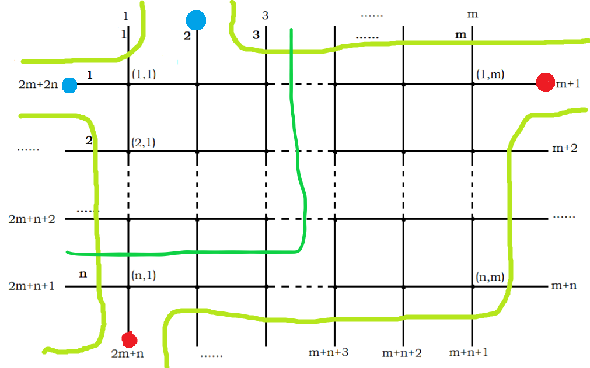

学习和做题笔记，旧的与新的都有。
1.最短路 最短路是图论中最基础的一类问题。
1.1.Bellman-Ford Bellman-Ford 是一种较为暴力求最短路的算法。
称一轮松弛 为对于每一条边 $(u,v)$，用 $dis_u+w(u,v)$ 更新 $dis_v$。那么每一轮松弛 必然会有一个节点的最短路会被更新，只需松弛 $n-1$ 即可。时间复杂度为 $\mathcal O(nm)$。
而我们也可以用该算法来判断是否存在负环 ：若松弛 超过 $n-1$ 轮仍有节点最短路被更新，那么图中存在负环。
1.2.SPFA 关于SPFA，它死了。
本质上是使用队列来优化的 Bellman-Ford。很明显我们每次并不需要枚举所有边，而只需要枚举在上一轮松弛 中最短路被更新的节点的出边即可。因此每次我们在松弛 过程中将最短路被更新的加入队列之中。并且可以记录某个节点是否在队列，若是则不用加入。
该算法在随机图上效率很高，但是对于特殊构造的数据，例如菊花图 ，会被卡成与 Bellman-Ford 相同的 $\mathcal O(nm)$。所以对于非负权图 ，应该采用下面即将提到的 Dikjstra 算法。
当然，SPFA 也可以用来判断负环，若最短路边数 大于 $n-1$，则图中存在负环。（也可以判断每个点的入队次数，不过会稍慢一点）。
1 2 3 4 5 6 7 8 9 10 11 12 13 14 15 16 17 18 19 20 21 22 23 24 25 26 27 28 29 30 31 32 33 34 35 36 37 38 39 40 41 42 43 44 45 46 47 48 49 50 51 52 53 54 55 56 57 58 59 60 61 62 63 #include <iostream> #include <cstdio> #include <cstring> #include <queue> using namespace std;const int n=1e3 +10 ,M=1e5 +10 ;int n,m,s;int tot,ver[M],e[M],ne[M],head[M];long long dis[N];bool vis[N];queue<int >q; void add (int u,int v,int w) ver[++tot]=v; e[tot]=w; ne[tot]=head[u]; head[u]=tot; } void init () memset (dis,0x15f ,sizeof (dis)); memset (vis,0 ,sizeof (vis)); } void SPFA (int s) q.push (s); dis[s]=0 ; vis[s]=1 ; while (!q.empty ()) { int now=q.front (); q.pop (); if (!vis[now]) continue ; vis[now]=0 ; for (int i=head[now];i;i=ne[i]) if (dis[now]+e[i]<dis[ver[i]]) { dis[ver[i]]=dis[now]+e[i]; if (!vis[ver[i]]) { vis[ver[i]]=1 ; q.push (ver[i]); } } } } int main () scanf ("%d%d%d" ,&n,&m,&s); for (int i=1 ;i<=m;i++) { int u,v,w; scanf ("%d%d%d" ,&u,&v,&w); add (u,v,w); add (v,u,w); } init (); SPFA (s); for (int i=1 ;i<=n;i++) printf ("%d " ,dis[i]); return 0 ; }
1.3.Dijkstra Dijkstra是基于贪心 的最短路算法，只适用于非负权图 。
称扩展 节点 $u$ 为对于 $u$ 的所有出边 $(u,v)$ ，用 $dis_u+w(u,v)$ 来更新
对于所有当前已经得到最短路的节点，取出所有未扩展节点中 $dis$ 最小的节点并扩展。因为没有负权边，所以取出的节点的 $dis_x$ 必然是单调不降 的。
注意，这个贪心过程，当每个点被第一次取出时，此时的 $dis$ 就是源点到它的最短路。很容易即可证明这一点。
取出 $dis$ 最小的节点的过程可以用优先队列来实现。每次扩展后将最短路得到更新的节点加入优先队列中。
需要注意的是一个节点可能被扩展多次并多次进入优先队列，这样又会扩展多次，这会使我们的算法退化至 $\mathcal O(m^2\log m)$。但是我们知道每次它第一次被取出时，一定是源点到该节点的最短路。为了避免某个节点扩展多次，我们需要记录该点是否已经从队列中取出（已经得到最短路并扩展），若已经从队列中取出，则直接跳过，否则得到最短路直接扩展并记录。时间复杂度为 $\mathcal O(m\log n)$。
1 2 3 4 5 6 7 8 9 10 11 12 13 14 15 16 17 18 19 20 21 22 23 24 25 26 27 28 29 30 31 32 33 34 35 36 37 38 39 40 41 42 43 44 45 46 47 48 49 50 51 52 53 54 55 56 57 58 59 60 61 62 63 64 65 66 67 68 69 70 71 72 73 #include <iostream> #include <cstdio> #include <cstring> #include <queue> using namespace std;const int N=1e5 +10 ,M=2e5 +10 ,INF=1e9 ;template <class T >inline void read (T &x) x=0 ;int f=0 ; char ch=getchar (); while (ch<'0' ||ch>'9' ){if (ch=='-' )f=1 ;ch=getchar ();} while (ch>='0' &&ch<='9' )x=(x<<1 )+(x<<3 )+(ch^48 ),ch=getchar (); if (f)x=~x+1 ; } template <class T,class ...T1>inline void read (T &x,T1 &...x1) read (x),read (x1...); } int n,m,s;int tot,head[N],ver[M],e[M],ne[M];int dis[N];bool vis[N];struct Node { int id,dis; friend bool operator <(Node u,Node v) { return u.dis>v.dis; } }; void add (int u,int v,int w) ver[++tot]=v; e[tot]=w; ne[tot]=head[u]; head[u]=tot; } void Dijkstra (int s) priority_queue<Node>q; q.push ((Node){s,0 }); memset (dis,0x3f ,sizeof (dis)); dis[s]=0 ; while (!q.empty ()) { int x=q.top ().id; q.pop (); if (vis[x])continue ; vis[x]=1 ; for (int i=head[x];i;i=ne[i]) if (dis[x]+e[i]<dis[ver[i]]) { dis[ver[i]]=dis[x]+e[i]; q.push ((Node){ver[i],dis[ver[i]]}); } } } int main () read (n,m,s); for (int i=1 ;i<=m;i++) { int u,v,w; read (u,v,w); add (u,v,w); } Dijkstra (s); for (int i=1 ;i<=n;i++) printf ("%d " ,dis[i]); return 0 ; }
1.4.Floyd 用于求全源最短路 的最常用算法，核心思想是 DP。
主要四步，枚举中转点 $k$，枚举 $i$，枚举 $j$，使用 $dis(i,k)+dis(k,j)$ 来更新 $dis_{i,j}$。
最需要注意的是枚举顺序，需要先枚举中转点 $k$，然后接着枚举 $i,j$ 。该算法正确性很显然，此处不再赘述。
Floyd 常被用来求传递闭包。将内层操作改为 $dis(i,j)\gets dis(i,j) \or (dis(i,k) \and dis(k,j))$ 即可。可用 bitset 来优化。
代码就算了。
1.5.Johnson 对于带负权稀疏图的全源最短路 。因为带负权，无法使用 Dijkstra。我们可以直接跑 $n$ 遍 SPFA，但是被卡到 $\mathcal O(n^2m)$ 就直接寄了，我们需要更为优秀的算法。
Johnson 的巧妙之处在于为每个点恰当地赋上势能 $h_i$，这里的势能 可以类似于物理上的势能。然后将 $(u,v)$ 的边权变为 $w(u,v)+h_u-h_v$，不难发现 $dis(s,t)=dis’(s,t)-h_s+h_t$，这只与 $s,t$ 有关，并且仍然是原来的最短路。于是我们可以直接在求最短路。
但是我们还没有解决负权的问题。我们需要使得 $w(u,v)+h_u\ge h_v$，联想到三角形不等式 ，如果没负环我们一定可以通过不断松弛使得 $h$ 满足上述关系式。将每个点直接入队（相当于新建一个源点 $0$ 再向每个点连长度为 $0$ 的边），然后跑一遍 SPFA，得出得最短路数组即为 $h$。
其实，这个形式不正是差分约束 的模型吗？直接跑就可以得到 $h$ 的一组解。
1 2 3 4 5 6 7 8 9 10 11 12 13 14 15 16 17 18 19 20 21 22 23 24 25 26 27 28 29 30 31 32 33 34 35 36 37 38 39 40 41 42 43 44 45 46 47 48 49 50 51 52 53 54 55 56 57 58 59 60 61 62 63 64 65 66 67 68 69 70 71 72 73 74 75 76 77 78 79 80 81 82 83 84 85 86 87 88 89 90 91 92 93 94 95 96 97 98 99 100 101 102 103 104 105 106 107 108 109 110 111 112 113 114 115 116 117 118 119 120 121 #include <iostream> #include <cstdio> #include <cstring> #include <queue> #define ll long long using namespace std;const int N=3e3 +10 ,M=6e3 +10 ,INF=1e9 ;template <class T>inline void read (T &x) x=0 ;int f=0 ; char ch=getchar (); while (ch<'0' ||ch>'9' ){if (ch=='-' )f=1 ;ch=getchar ();} while (ch>='0' &&ch<='9' )x=(x<<1 )+(x<<3 )+(ch^48 ),ch=getchar (); if (f)x=~x+1 ; } template <class T,class ...T1>inline void read (T &x,T1 &...x1) read (x),read (x1...); } int n,m;int tot,head[N],ver[M],e[M],ne[M];bool vis[N];int cnt[N],h[N],dis[N][N];struct Node { int id,d; const bool operator <(const Node &t)const { return d>t.d; } }; inline void add (int u,int v,int w) ver[++tot]=v; e[tot]=w; ne[tot]=head[u]; head[u]=tot; } inline void init () memset (dis,0x3f ,sizeof (dis)); } inline bool SPFA () queue<int >q; for (int i=1 ;i<=n;i++) q.push (i),vis[i]=1 ; while (!q.empty ()) { int x=q.front (); q.pop (); vis[x]=0 ; for (int i=head[x];i;i=ne[i]) { int y=ver[i]; if (h[x]+e[i]<h[y]) { h[y]=h[x]+e[i]; cnt[y]=cnt[x]+1 ; if (cnt[y]>=n)return 0 ; if (!vis[y])q.push (y),vis[y]=1 ; } } } return 1 ; } inline void Dijkstra (int s) memset (vis,0 ,sizeof (vis)); priority_queue<Node>q; q.push ({s,0 }); dis[s][s]=0 ; while (!q.empty ()) { int x=q.top ().id; q.pop (); if (vis[x])continue ; vis[x]=1 ; for (int i=head[x];i;i=ne[i]) { int y=ver[i]; if (dis[s][x]+e[i]+h[x]-h[y]<dis[s][y]) { dis[s][y]=dis[s][x]+e[i]+h[x]-h[y]; q.push ((Node){y,dis[s][y]}); } } } } int main () read (n,m); for (int i=1 ;i<=m;i++) { int u,v,w; read (u,v,w); add (u,v,w); } init (); if (!SPFA ()) { puts ("-1" ); return 0 ; } for (int i=1 ;i<=n;i++) Dijkstra (i); for (int i=1 ;i<=n;i++) { ll ans=0 ; for (int j=1 ;j<=n;j++) { if (dis[i][j]>INF) ans+=1ll *j*INF; else ans+=1ll *j*(dis[i][j]-h[i]+h[j]); } printf ("%lld\n" ,ans); } return 0 ; }
1.6.例题 题目简述：一张有向图，求出每条边被不同最短路径经过的次数， $n\le 1500,m\le 5000$。
经典题，考点：最短路图（或者说 最短路DAG？）。先说一下最短路图的概念：
首先，我们很容易知道：$i\to j$ 的最短路径的任意子路径 $u\to v$ 都是最短路径，接着我们可以得到另一个结论：若存在一条子路径 $u\to v$ 不是最短路径，那么很明显可以找到一条更短的 $u\to v$ 使得 $i\to j$ 更短。根据这个原则，我们可以得出在固定源点下，存在 $G$ 的一个子图 $G’$，使得 $G’$ 的每一条边都在 $S$ 到其他至少一个点的最短路径上，且 $G’$ 以外的边不在 $S$ 到任意一个点的最短路径上。这里把称 $G’$ 为源点为 $S$ 时 $G$ 的最短路图 。而求出最短路图的方式很简单，就是如果有 $dis_{v_i}=dis_{u_i}+w_i$，我们给这条路打上一个标记就行了。
有了这个有什么用呢？容易得到这个最短路图是无环的，我们就可以在最短路图 上进行拓扑排序 。考虑维护两个数组为 $cnt1_i$ 与 $cnt2_i$ 。接着我们考虑正反两次拓扑分别表示 $i\to u$ 和 $v\to j$ 的最短路径条数，而答案就为 $cnt_1({u_i})*cnt_2({v_i})$ 之和。
使用 Dijkstra 的话时间复杂度应该是 $\mathcal O(nm\log n + n^2)$，SPFA 也能过。
还是说几个经典题。
注意到需要求的是最后一个完成的任务时间的最小值。最大值最小很容易想到二分答案。设二分值为 $lim$。对于修建的虫洞，其必然经过每个用时大于 $lim$ 的任务，并且用时最多的减去虫洞的长度需要小于 $lim$。
先考虑第一个条件，我们很容易想到树上差分 ，然后通过统计子树和来计算每条边被任务经过的次数。然后我们再统计所有满足第一个条件的边中最长的长度，最后判断一下第二个条件就行了。
表面上是一个网络流24题，但直接跑分层图最短路 就可以了。
第一眼是一个经典最小割模型，直接上 Dinic 有 65pts（真的很多了）。
先考虑 $k=2$ 的情况，不就是 P4001 [ICPC-Beijing 2006] 狼抓兔子 吗？直接转成对偶图跑最短路即可。类似的 trick 还有 P2046 [NOI2010] 海拔 。
对于 $k>2$ 的情况，我们还是从对偶图最短路的角度进行思考。考虑对于任意两个颜色不同的关键点之间新建一个点。很容易发现对于所有新建的点中，任意两个点的最短路就可以把这张图割成两半。就像这样：
我们对每个新建的点分别作为源，求与其他点的最短路。因为最优的方案的中的最短路一定不会相交（调整法），于是我们可以尝试断环为链进行区间DP，也就是对其进行两两匹配，最后便可以得出答案。时间复杂度：$\mathcal O(\sum knm\log (nm)+\sum k^3)$。
首先说一种较为暴力的做法，我们尝试将 $k$ 个关键点分为两组，超级源点 $s$ 向其中一组连边，另一组则向超级汇点 $t$ 连边，很明显 $s\to t$ 的最短路就是不同组之间进行配对的答案 。
介于这个思路，有一个较为暴力做法：每次将点的编号按照二进制中的第 $i$ 位来分为两组，然后按照上述方法跑 $\log k$ 次 $s\to t$ 的最短路，最后取 min 就是答案。这样很显然是正确的，因为最近的一对点的编号本来就是不同的，所以说一定会被统计到。
还有更优秀的做法。我们尝试用 Dijkstra 求出从 $i$ 到最近的关键点的距离 $dis1_i$ 和从最近的关键点到 $i$ 的距离 $dis_2(i)$，并且记录是从哪个关键点转移过来，设为 $f_i$ 和 $g_i$。然后我们枚举每一条边 $(u,v,w)$，若 $f_u$ 不等于 $g_v$，将 $dis_1(u)+w+dis_2(v)$ 计入答案即可。
这样枚举边为什么是正确的呢？这里留给读者思考。想通了这个问题也就不难明白为什么枚举点是错误的。
每次询问直接暴力当然不能够通过。我们考虑先做一次 Dijkstra，然后再计算最短路的增量。
如何计算增量？设原来的最短路为 $dis_i$，考虑类似于 Johnson 的做法，我们把边权变为 $w(u,v)+dis_u-dis_v$，再跑最短路。这样就得到了增量。类似于 Johnson 的边权，这里的边权也一定是非负的。但是为什么这样是正确的呢？还是类似于 Johnson 中最短路的式子，有 $dis’_u=w’(s,p_1)+w’(p_1,p_2)+\dots+w’(p_{l-1},p_l)-dis_u$。于是这里求出的最短路径也是原图上的最短路径。
但是直接用的 Dijkstra 来求增量跟暴力的复杂度没有区别。但是注意到每次的增量最多为 $\min(c,n-1)$，并且最短路是单调不降的，于是我们可以将朴素 Dijkstra 中的堆直接换成桶 ，对于桶的每一个位置开一个队列，再从前往后做就可以了。这样的单次的复杂度就是 $\mathcal O(m)$ 的。
最开始仍然需要做一遍朴素 Dijkstra，总复杂度为 $\mathcal O(m\log n +qm)$。
1 2 3 4 5 6 7 8 9 10 11 12 13 14 15 16 17 18 19 20 21 22 23 24 25 26 27 28 29 30 31 32 33 34 35 36 37 38 39 40 41 42 43 44 45 46 47 48 49 50 51 52 53 54 55 56 57 58 59 60 61 62 63 64 65 66 67 68 69 70 71 72 73 74 75 76 77 78 79 80 81 82 83 84 85 86 87 88 89 90 91 92 93 94 95 96 97 98 99 100 101 102 103 104 105 106 107 108 109 110 111 112 113 114 115 116 117 118 119 120 121 122 #include <iostream> #include <cstdio> #include <cstring> #include <queue> #define ll long long using namespace std;const int N=1e5 +10 ,M=1e5 +10 ;const ll INF=1e15 ;template <class T>inline void read (T &x) x=0 ;int f=0 ; char ch=getchar (); while (ch<'0' ||ch>'9' ){if (ch=='-' )f=1 ;ch=getchar ();} while (ch>='0' &&ch<='9' )x=(x<<1 )+(x<<3 )+(ch^48 ),ch=getchar (); if (f)x=~x+1 ; } template <class T,class ...T1>inline void read (T &x,T1 &...x1) read (x),read (x1...); } struct Node { int id; ll d; const bool operator <(const Node &t)const { return d>t.d; } }; int n,m,T;int tot,head[N],ver[M],e[M],ne[M];ll dis[N]; int f[N];bool vis[N];inline void add (int u,int v,int w) ver[++tot]=v; e[tot]=w; ne[tot]=head[u]; head[u]=tot; } inline void Dijkstra (int s) priority_queue<Node>q; q.push ((Node){s,0 }); memset (dis,0x3f ,sizeof (dis)); dis[s]=0 ; while (!q.empty ()) { int x=q.top ().id; q.pop (); if (vis[x])continue ; vis[x]=1 ; for (int i=head[x];i;i=ne[i]) { int y=ver[i]; if (dis[x]+e[i]<dis[y]) { dis[y]=dis[x]+e[i]; q.push ((Node){y,dis[y]}); } } } } queue<int >q[N]; inline void BFS (int lim) for (int i=0 ;i<=lim;i++)while (!q[i].empty ())q[i].pop (); for (int i=1 ;i<=n;i++)f[i]=lim; q[0 ].push (1 ),f[1 ]=0 ; int mx=0 ; for (int t=0 ;t<=mx;t++) { while (!q[t].empty ()) { int x=q[t].front (); q[t].pop (); if (f[x]<t)continue ; for (int i=head[x];i;i=ne[i]) { int y=ver[i]; if (f[x]+e[i]+dis[x]-dis[y]<f[y]) { f[y]=f[x]+e[i]+dis[x]-dis[y]; mx=max (mx,f[y]); q[f[y]].push (y); } } } } for (int i=1 ;i<=n;i++)if (dis[i]<INF)dis[i]+=f[i]; } int main () read (n,m,T); for (int i=1 ;i<=m;i++) { int u,v,w; read (u,v,w); add (u,v,w); } Dijkstra (1 ); while (T--) { int op,c; read (op,c); if (op==1 )printf ("%lld\n" ,dis[c]<INF?dis[c]:-1 ); else { for (int i=1 ;i<=c;i++) { int x; read (x); e[x]++; } BFS (min (c,n-1 )); } } return 0 ; }
2.差分约束 2.1.算法介绍 前置芝士：Bellman-Ford 和 SPFA。
差分约束问题为：给出若干形如 $x_a-x_b\le c$ 或 $x_a-x_b\ge c$ 求解任意一组 $x$ 的解。
我们很容易将所有的限制写为 $x_i+c\ge x_j$。这熟悉的形式，让我们想起三角形不等式 ，使得我们可以用最短路求解。我们从 $i\to j$ 连一条长度为 $c$ 的边，然后从超级源点 $s$ 向每个点连长度为 $0$ 的边以防止不连通（或者说一开始令所有的 $dis=0$ 并将所有的点入队），跑最短路，每个点的最短路长度就是一组合法解。
因为 $c$ 一般都有负数，所以用 Bellman-Ford 和 SPFA 求解最短路，此时得到的解为字典序最大解（似乎有些违反直觉，但确实是这样）。显然，若出现负环则无解。
时间复杂度为 $\mathcal O(nm)$。
1 2 3 4 5 6 7 8 9 10 11 12 13 14 15 16 17 18 19 20 21 22 23 24 25 26 27 28 29 30 31 32 33 34 35 36 37 38 39 40 41 42 43 44 45 46 47 48 49 50 51 52 53 54 55 56 57 58 59 60 61 62 63 64 65 66 67 68 69 70 71 72 #include <iostream> #include <cstdio> #include <queue> using namespace std;const int N=5e3 +10 ,M=5e3 +10 ;template <class T>inline void read (T &x) x=0 ;int f=0 ; char ch=getchar (); while (ch<'0' ||ch>'9' ){if (ch=='-' )f=1 ;ch=getchar ();} while (ch>='0' &&ch<='9' )x=(x<<1 )+(x<<3 )+(ch^48 ),ch=getchar (); if (f)x=~x+1 ; } template <class T,class ...T1>inline void read (T &x,T1 &...x1) read (x),read (x1...); } int n,m;int tot,head[N],ver[M],e[M],ne[M];int vis[N],dis[N],cnt[N];inline void add (int u,int v,int w) ver[++tot]=v; e[tot]=w; ne[tot]=head[u]; head[u]=tot; } bool SPFA () queue<int >q; for (int i=1 ;i<=n;i++) q.push (i),vis[i]=1 ; while (!q.empty ()) { int x=q.front (); q.pop (); vis[x]=0 ; for (int i=head[x];i;i=ne[i]) { if (dis[x]+e[i]<dis[ver[i]]) { dis[ver[i]]=dis[x]+e[i]; cnt[ver[i]]=cnt[x]+1 ; if (cnt[ver[i]]>=n) { puts ("NO" ); return 0 ; } if (!vis[ver[i]]) q.push (ver[i]),vis[ver[i]]=1 ; } } } return 1 ; } int main () read (n,m); for (int i=1 ;i<=m;i++) { int u,v,w; read (u,v,w); add (v,u,w); } if (SPFA ()) for (int i=1 ;i<=n;i++) printf ("%d " ,dis[i]); return 0 ; }
2.2.例题 每条边的长度我们并不好直接将构造，但很明显我们只需要构造一组合法的 $dis$ 就可以了。
考虑三角形不等式 ，对于每条边 $(u,v)$，满足 $1\le dis_v-dis_u\le 9$。熟悉的形式使我们想到差分约束 。按照模型将图建出来，得到 $dis$ 的任意一组解即可。
需要注意一下去除与答案无关的边，这些边随便取什么值都可以，正反两遍 dfs 即可判断。
很明显需要先二分，看起来是个差分约束 的形式，可是我们需要求的是倍数的形式，而非差分。怎样转换？我们只需要对所有的 $k$ 取对数就可以把乘法转化为加法。这样我们直接上差分约束判断负环就可以了。
注意这里给定了初值，我们从 $0$ 向 $i$ 分别连 $\log x$ 和 $-\log x$ 的边就可以了，相等形式的边都可以这样连（转化为 $x_i\ge x_j$ 且 $x_j\ge x_i$ 即可）。
形式就很差分约束，可以直接对前缀和数组进行差分约束，但是这样的复杂度是 $\mathcal O(nm)$，无法通过。
我们发现最令人头疼的是对于 $[l,r]$ 这样的限制，因为我们必须建权值为 $(r-l+1)/2$ 的边。这样我们只能够暴力跑 SPFA。
但是我们可以将 $0$ 看为 $1$，而将 $1$ 看为 $-1$。这样我们对于 $[l,r]$ 这样的限制，只需要建长度为 $0$ 的边即可。相邻点的限制变成了 $|v_i-v_{i-1}|\le 1$。所有边权只剩下 $0,1$，我们可以直接用 01 BFS 跑最短路。因为差分约束求出来的解为字典序最大解，所以求出来就是原问题最小字典序的解。
1 2 3 4 5 6 7 8 9 10 11 12 13 14 15 16 17 18 19 20 21 22 23 24 25 26 27 28 29 30 31 32 33 34 35 36 37 38 39 40 41 42 43 44 45 46 47 48 49 50 51 52 53 54 55 56 57 58 59 60 61 62 63 64 65 66 67 68 #include <iostream> #include <cstdio> #include <cstring> #include <deque> using namespace std;const int N=1e6 +10 ,M=3e6 +10 ;template <class T >inline void read (T &x) x=0 ;bool f=0 ; char ch=getchar (); while (ch<'0' ||ch>'9' ){if (ch=='-' )f=1 ;ch=getchar ();} while (ch>='0' &&ch<='9' )x=(x<<1 )+(x<<3 )+(ch^48 ),ch=getchar (); if (f)x=-x; } template <class T ,class ...T1>inline void read (T &x,T1 &...x1) read (x),read (x1...); } int n,m;int tot,head[N],ver[M],e[M],ne[M];int dis[N];deque<int >q; inline void add (int u,int v,int w) ver[++tot]=v; e[tot]=w; ne[tot]=head[u]; head[u]=tot; } inline void BFS () memset (dis,0x3f ,sizeof (dis)); dis[0 ]=0 ; q.push_back (0 ); while (!q.empty ()) { int x=q.front (); q.pop_front (); for (int i=head[x];i;i=ne[i]) { int y=ver[i],d=dis[x]+e[i]; if (dis[y]>d) { dis[y]=d; if (!e[i])q.push_front (y); else q.push_back (y); } } } } int main () read (n,m); for (int i=1 ;i<=n;i++) add (i,i-1 ,1 ),add (i-1 ,i,1 ); while (m--) { int l,r; read (l,r); add (r,l-1 ,0 ),add (l-1 ,r,0 ); } BFS (); for (int i=1 ;i<=n;i++) printf ("%d" ,dis[i-1 ]>dis[i]); return 0 ; }
最重要的限制是矩阵 $a$ 中每个数的大小 $\le 10^6$。
我们考虑先构造出任意一种 $a$，再对其进行调整即可，我们按照奇偶对行列进行分类对奇数 $\pm 1$，对偶数 $\mp 1$，这样还是能够满足 $b$ 的限制的。转化为 $0\le a_{i,j} +(-1)^i h_{i} +(-1)^j l_{j} \le 10^6$。但是当行与列的奇偶性相同时就会出先和约束，这是我们无法解决的。
考虑如何限制 $(-1)^i,(-1)^j$，使其不会出现符号相同的情况。尝试对其进行黑白染色，限制转化为 $0\le a_{i,j} +(-1)^{i+j} h_{i} +(-1)^{i+j+1} l_{j} \le 10^6$，这样也能够满足 $b$ 的限制，并且可以直接跑差分约束求出 $h,l$ 即可。
可能有一点卡常，据说可以使用寻址更连续 Bellman-Ford 来代替 SPFA，但感觉没啥用。真正有用的是将存图方式从链式前向星改成用 vector 实现的邻接表。因为边的数量很多，并且寻址变得非常连续。笔者的代码在改了之后快了将近 5 倍。
3.最小生成树 3.1.Kruskal 最经典且常用的最小生成树算法，非常简单且基础。
现将所有边排序，贪心地从小到大选取，若边的两个端点所属联通块不同，就将该边加入答案，用并查集维护连通性。正确性用反证法就可以很容易证明了。其它应用还有 Kruskal 重构树。
3.2.Prim Prim 总是维护 MST 的一部分，每次选取维护的联通块所相连的边中最小的边，将该边加入答案的同时维护联通块。其中选取最小的边用优先队列就可以了，时间复杂度 $\mathcal O(m\log n)$。可以类似于 Dijkstra。
3.3.Boruvka 从点来考虑，对于每个点而言，与它相邻的边权最小的边必然入选。这一点还是可以通过反证法可以证明。
于是我们每次求出每个点与其相连的最小的边。将所有这些边加入最小生成树中。出去至多 $\frac{n}{2}$ 重边，每条边会使联通块个数 $-1$，因此一次这样过程可以使得联通块的个数严格减少一半。这样对剩余联通块继续上述过程至多 $\log_2 n$ 轮即可求得 MST。时间复杂度为 $\mathcal O(m\log n)$。Boruvka 在解决某类最小生成树问题上非常有用。对于形如给定一张 n 个点的完全图，两点之间的信息可以通过某种关系计算得出，该算法可以较好得求解。
3.4.例题 显然，我们应该先把最小生成树求出来，然后逐渐考虑每条边。设求出的生成树是 $T$，且下文中的路径都指生成树上的路径。
1.$(u,v,w)\notin T$：如果选取这条边，那么很明显其最大值为路径 $(u,v)$ 上的边的边权最大值。
2.$(u,v,w)\in T$：这种情况稍微复杂一点，这种边的最大值，是所有能覆盖这条边的非树边的最小值。何为能覆盖？就是对于一条非树边 $(x,y,z)$，若某一树边 $(u,v,w)$ 在路径 $(x,y)$ 上，我们则称之为能覆盖。
于是我们先考虑非树边，求出这条边的答案。然后每次对路径 $(u,v)$ 上的边权与 $w$ 进行取 min 操作。这可以用树链剖分很好的维护。但是有更好的做法，因为我们是按照边权从小到大排过序的，所以对于已经覆盖过的边，其已经是最优答案了，我们并不需要再覆盖它。于是我们可以每次直接暴力覆盖，然后用并查集维护未被覆盖的边就行了。时间复杂度 $\mathcal O(m\log m)$，瓶颈是排序。
代码非常的好写。
考虑将树上操作转化为在 $dfn$ 序上进行操作。子树操作就变成了区间操作。对于区间操作我们又可以考虑用差分将其转化为单点操作。这里的 $dfn$ 序可以只考虑叶子结点。
接着很自然地想到了生成树，对于每个操作 $(dfn_i,dfn_i+size_i,w_i)$，我们都把他转化为 $n$ 个节点的图上的一条边。显然只要使这个图联通我们就可以控制所有点的点权。求一遍 MST 就行了。
考虑 Kruskal，我们每次都是贪心的选取边权最小的边。异或最小值我们可以考虑在 01-Trie 上进行操作。
我们考虑将所有点权放进 01-Trie 上。然后从根节点开始，考虑先递归其子树，使左右子树分别联通，再在 01-Trie 中查找边权最小的边，并将左右子树连起来。过程中计算花费即可。时间复杂度 $\mathcal O(n\log V)$，其中 $V$ 为值域。常数稍微有点大。
另外可以用 Boruvka 做。
1 2 3 4 5 6 7 8 9 10 11 12 13 14 15 16 17 18 19 20 21 22 23 24 25 26 27 28 29 30 31 32 33 34 35 36 37 38 39 40 41 42 43 44 45 46 47 48 49 50 51 52 53 54 55 56 57 58 59 60 61 62 63 64 65 66 67 68 69 70 #include <iostream> #include <cstdio> #define ll long long using namespace std;const int N=2e5 +10 ;const ll INF=1ll <<60 ;template <class T>inline void read (T &x) x=0 ;bool f=0 ; char ch=getchar (); while (ch<'0' ||ch>'9' ){if (ch=='-' )f=1 ;ch=getchar ();} while (ch>='0' &&ch<='9' )x=(x<<1 )+(x<<3 )+(ch^48 ),ch=getchar (); if (f)x=-x; } template <class T,class ...T1>inline void read (T &x,T1 &...x1) read (x),read (x1...); } int n;int a[N];int tot=1 ,ch[N<<4 ][2 ],ed[N<<4 ];ll ans; inline void insert (int x) int u=1 ; for (int i=31 ;~i;i--) { int num=x>>i&1 ; if (!ch[u][num]) ch[u][num]=++tot; u=ch[u][num]; } ed[u]=x; } ll solve (int u,int v) if (ed[u]||ed[v])return ed[u]^ed[v]; ll res1=INF,res2=INF; if (ch[u][0 ]&&ch[v][0 ])res1=solve (ch[u][0 ],ch[v][0 ]); if (ch[u][1 ]&&ch[v][1 ])res2=solve (ch[u][1 ],ch[v][1 ]); if (res1!=INF||res2!=INF) return min (res1,res2); if (ch[u][0 ]&&ch[v][1 ])res1=solve (ch[u][0 ],ch[v][1 ]); if (ch[u][1 ]&&ch[v][0 ])res2=solve (ch[u][1 ],ch[v][0 ]); return min (res1,res2); } void dfs (int u) if (ch[u][0 ])dfs (ch[u][0 ]); if (ch[u][1 ])dfs (ch[u][1 ]); if (ch[u][0 ]&&ch[u][1 ]) ans+=solve (ch[u][0 ],ch[u][1 ]); } int main () read (n); for (int i=1 ;i<=n;i++) { int x; read (x); insert (x); } dfs (1 ); printf ("%lld\n" ,ans); return 0 ; }
4.Tarjan 与图的连通性 4.1.算法简介 无向图的割边（即”桥“）、割点、边双连通分量、点双连通分量，有向图的强连通分量，他们都是图的连通性研究的重要内容，定义此处不再赘述。
Tarjan 利用 dfs 树以及时间戳 $dfn_x$ 追溯值 $low_x$ 来求这些东西。设 $\text{subtree}(x)$ 表示搜索树上以 $x$ 为根的子树，$low_x$ 定义为以下节点的时间戳 $dfn_y$ 的最小值：1.$\text{subtree}(x)$ 中的节点；2.通过一条 $\text{subtree}(x)$ 中的节点上但不属于搜索树上的边，能够到达的节点（不包括）。
我们以割边为例简要阐释其原理。
4.1.1割边判定法则 无向边 $(x,y)$ 为割边，当且仅当都搜索树上存在 $x$ 的一个子节点 $y$ 满足：
先说明充分性，$dfn_x<low_y$，说明从 $\text{subtree}(y)$ 不经过 $(x,y)$ 不可以到达 $x$ 或其之前访问的节点。并且它不可以到达兄弟子树中的节点 。所以若将 $(x,y)$ 删除，那么 $\text{subtree}(y)$ 不再与原图连通，符合割边的定义。
必要性呢？反证，若不存在这样的 $y$ 为搜索树上 $x$ 的子节点满足 $dfn_x<low_y$，那么从 $\text{subtree}(y)$ 不经过 $(x,y)$ 可以到达 $x$ 或其之前访问的节点，删除 $(x,y)$ ，仍可以到达 $x$，不影响图的连通性，此时 $(x,y)$ 自然不为割边。
4.1.1割点判定法则 若 $x$ 不为搜索树根节点，$x$为割点，当且仅当都搜索树上存在一个 $x$ 的子节点 $y$ 满足：
特别地，若 $x$ 为搜索树根节点，$x$为割点，当且仅当都搜索树上至少存在两个 $x$ 的子节点 $y1,y2$ 满足上述条件。
其证明方法与割边类似。注意到这里是 $dfn_x\le low_y$，我们可以直接将父节点的 $dfn_{fa}$ 算到字节点的 $low_x$ 上。而下面圆方树部分均采用这样的定义。
4.1.1强连通分量判定法则 在 $x$ 进行回溯之前，$x$ 到栈顶节点形成一个强连通分量，当且仅当 $x$ 满足：
此处先不做过多阐述。
5.圆方树 5.1.算法简介
圆方树最初是处理“仙人掌图”（每条边在不超过一个简单环中的无向图）的一种工具，不过发掘它的更多性质， 有时我们可以在一般无向图上使用它。——by OI-wiki
顾名思义，在圆方树中有两种点——圆点与方点。其中圆点对应原图上的每一个点，方点对应着原图上的每一个点双连通分量。点双连通分量被缩成一个由方点向各圆点连边的菊花图。而这些菊花图通过原图的割点相连。
对于一般的无向图，我们采用类似于求割点的做法。类似于求强连通分量，中途用栈维护来求点双连通分量以及建圆方树。整体实现比较简单。
1 2 3 4 5 6 7 8 9 10 11 12 13 14 15 16 17 18 19 20 21 22 23 24 25 26 27 28 29 30 31 32 33 34 35 36 37 38 39 40 41 42 43 44 45 46 47 48 49 50 51 52 53 54 55 56 57 58 59 60 61 62 63 64 65 66 67 68 #include <iostream> #include <cstdio> #include <algorithm> #include <vector> using namespace std;const int N=1e4 +10 ,M=2e4 +10 ;template <class T>inline void read (T &x) x=0 ;bool f=0 ; char ch=getchar (); while (ch<'0' ||ch>'9' ){if (ch=='-' )f=1 ;ch=getchar ();} while (ch>='0' &&ch<='9' )x=(x<<1 )+(x<<3 )+(ch^48 ),ch=getchar (); if (f)x=~x+1 ; } template <class T,class ...T1>inline void read (T &x,T1 &...x1) read (x),read (x1...); } int n,m;int dfncnt,top,dfn[N],low[N],sta[N];int cnt;vector<int >e[N],g[N]; inline void add_e (int u,int v) e[u].push_back (v); e[v].push_back (u); } inline void add_g (int u,int v) g[u].push_back (v); g[v].push_back (u); } inline void build (int x,int y) ++cnt; for (int u=0 ;u!=y;--top)u=sta[top],add_g (u,cnt); add_g (x,cnt); } void Tarjan (int x) dfn[x]=low[x]=++dfncnt; sta[++top]=x; for (auto y:e[x]) { if (!dfn[y]) { Tarjan (y); low[x]=min (low[x],low[y]); if (dfn[x]==low[y])build (x,y); } else low[x]=min (low[x],dfn[y]); } } int main () read (n,m); cnt=n; for (int i=1 ;i<=m;i++) { int u,v; read (u,v); add_e (u,v); } for (int i=1 ;i<=n;i++)if (!dfn[i])Tarjan (i),top--; return 0 ; }
5.2.性质 5.3.例题 模板题。圆方树的题一般先建出圆方树在树上进行各种算法，过程中可能会将圆点与方点分开进行考虑。这道题类似，我们建出圆方树，求圆方树上 $x,y$ 的 $lca$，设 $dis_u$ 为 $u$ 到根节点的距离。若 $lca$ 为圆点，那么答案为 $dis_x+dis_y-dis_{lca}$。
但是如果 $lca$ 为方点呢？意味着我们倍增过程中跳到了环上。特殊处理，设圆点 $A,B$ 为倍增过程中 $lca$ 的儿子。我们考虑 $A,B$ 之间的最小距离即可。于是我们求出环上每一个点按照一定方向到方点的距离 $s_x$，环的总长为 $stot_x$，那么答案为 $dis_x+dis_y-dis_A-dis_B+\min(|s_A-s_B|,stot_A-|s_A-s_B|)$。
如何在求点双的过程中合理地为每个圆点连向方点赋上边权？直接赋为到割点 $x$ 地最小距离即可。容易发现这样处理是正确的。
但是新的问题又来了，如何在求点双的过程中求出环上所有边的边权。网上很少有这种用点双来实现的做法，笔者这里给出较为简单的一种方式。容易发现，仙人掌上每一个点，最多只有一条路径以该点为起点，能够到达搜索树上的祖先，而这个祖先就是割点。于是我们在求 $low_x$ 的过程中记录下使 $low_x$ 更新的边 $(x,y,z)$ 的权值，找出点双的过程中即可求出我们想要的信息。
这里给出一种实现方式。
1 2 3 4 5 6 7 8 9 10 11 12 13 14 15 16 17 18 19 20 21 22 23 24 25 26 27 28 29 30 31 32 33 34 35 36 37 38 39 40 41 42 43 44 45 46 47 48 49 50 51 52 53 54 55 56 57 58 59 60 61 62 63 64 65 66 67 68 69 70 71 72 73 74 75 76 77 78 79 80 81 82 83 84 85 86 87 88 89 90 91 92 93 94 95 96 97 98 99 100 101 102 103 104 105 106 107 108 109 110 111 112 113 114 115 116 117 118 119 120 121 122 123 124 125 126 #include <iostream> #include <cstdio> #include <algorithm> #include <vector> using namespace std;const int N=2e4 +10 ,M=2e4 +10 ,K=15 ;template <class T>inline void read (T &x) x=0 ;bool f=0 ; char ch=getchar (); while (ch<'0' ||ch>'9' ){if (ch=='-' )f=1 ;ch=getchar ();} while (ch>='0' &&ch<='9' )x=(x<<1 )+(x<<3 )+(ch^48 ),ch=getchar (); if (f)x=~x+1 ; } template <class T,class ...T1>inline void read (T &x,T1 &...x1) read (x),read (x1...); } struct Edge { int v,w; }; int n,m,q;int dfncnt,top,dfn[N],low[N],sta[N],to[N];int s[N],stot[N];int cnt;vector<Edge>e[N],g[N]; int d[N],dis[N],f[N][16 ];int A,B;inline void add_e (int u,int v,int w) e[u].push_back ((Edge){v,w}); e[v].push_back ((Edge){u,w}); } inline void add_g (int u,int v,int w) g[u].push_back ((Edge){v,w}); g[v].push_back ((Edge){u,w}); } inline void build (int x,int y,int z) add_g (x,++cnt,0 ); int i,u=0 ,sum=0 ; for (i=top;i&&u!=y;i--) { u=sta[i]; sum+=to[u]; s[u]=sum; } sum+=z; stot[x]=sum; for (u=0 ;u!=y;top--) { u=sta[top]; stot[u]=sum; add_g (u,cnt,min (s[u],sum-s[u])); } } void Tarjan (int x) dfn[x]=low[x]=++dfncnt; sta[++top]=x; for (auto u:e[x]) { int y=u.v,z=u.w; if (!dfn[y]) { Tarjan (y); if (low[y]<=low[x])low[x]=low[y],to[x]=z; if (dfn[x]==low[y])build (x,y,z); } else if (dfn[y]<low[x])low[x]=dfn[y],to[x]=z; } } void dfs (int x) for (auto u:g[x]) { int y=u.v,z=u.w; if (y==f[x][0 ])continue ; d[y]=d[x]+1 ,dis[y]=dis[x]+z; f[y][0 ]=x; for (int i=1 ;i<=K;i++) f[y][i]=f[f[y][i-1 ]][i-1 ]; dfs (y); } } inline int LCA (int x,int y) if (d[x]<d[y])swap (x,y); for (int i=K;~i;i--)if (d[f[x][i]]>=d[y])x=f[x][i]; if (x==y)return x; for (int i=K;~i;i--)if (f[x][i]!=f[y][i])x=f[x][i],y=f[y][i]; A=x,B=y; return f[x][0 ]; } int main () read (n,m,q); cnt=n; for (int i=1 ;i<=m;i++) { int u,v,w; read (u,v,w); add_e (u,v,w); } Tarjan (1 ); d[1 ]=1 ; dfs (1 ); while (q--) { int x,y; read (x,y); int lca=LCA (x,y); if (lca<=n)printf ("%d\n" ,dis[x]+dis[y]-2 *dis[lca]); else printf ("%d\n" ,dis[x]+dis[y]-dis[A]-dis[B]+min (abs (s[A]-s[B]),stot[A]-abs (s[A]-s[B]))); } return 0 ; }
特别地，对于仙人掌，我们可以采用类似求边双连通分量的方式来建仙人掌的圆方树。因为当我们从 $x$ 走到一个 $y$ 不以 $x$ 为搜索树上的父亲，也不是在 $x$ 之前访问节点。那么搜索树上 $x\to y$ 的路径和 $(y,x)$ 就一同构成了一个环。这样做的话，在处理边权问题时就会方便一些。具体实现也可以看看代码。
1 2 3 4 5 6 7 8 9 10 11 12 13 14 15 16 17 18 19 20 21 22 23 24 25 26 27 28 29 30 31 32 33 34 35 36 37 38 39 40 41 42 43 44 45 46 47 48 49 50 51 52 53 54 55 56 57 58 59 60 61 62 63 64 65 66 67 68 69 70 71 72 73 74 75 76 77 78 79 80 81 82 83 84 85 86 87 88 89 90 91 92 93 94 95 96 97 98 99 100 101 102 103 104 105 106 107 108 109 110 111 112 113 114 115 116 117 118 119 120 121 122 123 124 125 #include <iostream> #include <cstdio> #include <cmath> #include <algorithm> #include <vector> using namespace std;const int N=2e4 +10 ,M=2e4 +10 ,K=15 ;template <class T>inline void read (T &x) x=0 ;bool f=0 ; char ch=getchar (); while (ch<'0' ||ch>'9' ){if (ch=='-' )f=1 ;ch=getchar ();} while (ch>='0' &&ch<='9' )x=(x<<1 )+(x<<3 )+(ch^48 ),ch=getchar (); if (f)x=~x+1 ; } template <class T,class ...T1>inline void read (T &x,T1 &...x1) read (x),read (x1...); } struct Edge { int v,w; }; int n,m,q;int dfncnt,cnt,dfn[N],low[N],fa[N],fw[N];int stot[N],s[N];vector<Edge>e[N],g[N]; int d[N],dis[N],f[N][16 ];int A,B;inline void add_e (int u,int v,int w) e[u].push_back ((Edge){v,w}); e[v].push_back ((Edge){u,w}); } inline void add_g (int u,int v,int w) g[u].push_back ((Edge){v,w}); g[v].push_back ((Edge){u,w}); } inline void build (int x,int y,int z) int sum=z; for (int i=y;i!=x;i=fa[i]) { s[i]=sum; sum+=fw[i]; } stot[x]=s[x]=sum; add_g (x,++cnt,0 ); for (int i=y;i!=x;i=fa[i]) { stot[i]=sum; add_g (i,cnt,min (s[i],sum-s[i])); } } void Tarjan (int x) dfn[x]=low[x]=++dfncnt; for (auto u:e[x]) { int y=u.v,z=u.w; if (fa[x]==y)continue ; if (!dfn[y]) { fa[y]=x,fw[y]=z; Tarjan (y); low[x]=min (low[x],low[y]); if (dfn[x]<low[y])add_g (x,y,z); } else low[x]=min (low[x],dfn[y]); } for (auto u:e[x]) if (dfn[u.v]>dfn[x]&&fa[u.v]!=x) build (x,u.v,u.w); } void dfs (int x) for (auto u:g[x]) { int y=u.v,z=u.w; if (y==f[x][0 ])continue ; d[y]=d[x]+1 ,dis[y]=dis[x]+z; f[y][0 ]=x; for (int i=1 ;i<=K;i++) f[y][i]=f[f[y][i-1 ]][i-1 ]; dfs (y); } } inline int LCA (int x,int y) if (d[x]<d[y])swap (x,y); for (int i=K;~i;i--)if (d[f[x][i]]>=d[y])x=f[x][i]; if (x==y)return x; for (int i=K;~i;i--)if (f[x][i]!=f[y][i])x=f[x][i],y=f[y][i]; A=x,B=y; return f[x][0 ]; } int main () read (n,m,q); cnt=n; for (int i=1 ;i<=m;i++) { int u,v,w; read (u,v,w); add_e (u,v,w); } for (int i=1 ;i<=n;i++)if (!dfn[i])Tarjan (i); d[1 ]=1 ; dfs (1 ); while (q--) { int x,y; read (x,y); int lca=LCA (x,y); if (lca<=n)printf ("%d\n" ,dis[x]+dis[y]-2 *dis[lca]); else printf ("%d\n" ,dis[x]+dis[y]-dis[A]-dis[B]+min (abs (s[A]-s[B]),stot[A]-abs (s[A]-s[B]))); } return 0 ; }
经典圆方树练习题，考虑建出圆方树。考虑初末点 $s,f$，容易发现应当求圆方树上路径 $(s,f)$ 经过的所有点双的大小之和。考虑将方点的权值赋为点双的大小，树上 DP 求出。但是这样做显然是会重复的，因为路径上的每个圆点（除 $s,f$）作为原图上的割点会存在于两个点双之中。并且中转点 $c$ 不能为 $s,f$。于是我们将每个圆点点权赋为 $-1$，问题得到很好的解决。
1 2 3 4 5 6 7 8 9 10 11 12 13 14 15 16 17 18 19 20 21 22 23 24 25 26 27 28 29 30 31 32 33 34 35 36 37 38 39 40 41 42 43 44 45 46 47 48 49 50 51 52 53 54 55 56 57 58 59 60 61 62 63 64 65 66 67 68 69 70 71 72 73 74 75 76 77 78 79 80 81 82 83 #include <iostream> #include <cstdio> #include <vector> #define ll long long using namespace std;const int N=1e5 +10 ,M=2e5 +10 ;template <class T>inline void read (T &x) x=0 ;bool f=0 ; char ch=getchar (); while (ch<'0' ||ch>'9' ){if (ch=='-' )f=1 ;ch=getchar ();} while (ch>='0' &&ch<='9' )x=(x<<1 )+(x<<3 )+(ch^48 ),ch=getchar (); if (f)x=~x+1 ; } template <class T,class ...T1>inline void read (T &x,T1 &...x1) read (x),read (x1...); } int n,m;int dfncnt,top,tot,dfn[N],low[N],sta[N];int cnt,val[N<<1 ],si[N<<1 ];ll ans; vector<int >e[N],g[N<<1 ]; inline void add_e (int u,int v) push_back (v);e[v].push_back (u);}inline void add_g (int u,int v) push_back (v),g[v].push_back (u);}void build (int x,int y) add_g (x,++cnt);val[cnt]=1 ; for (int u=0 ;u!=y;top--)add_g (u=sta[top],cnt),val[cnt]++; } void Tarjan (int x) dfn[x]=low[x]=++dfncnt; sta[++top]=x,tot++; for (auto y:e[x]) { if (!dfn[y]) { Tarjan (y); low[x]=min (low[x],low[y]); if (dfn[x]==low[y])build (x,y); } else low[x]=min (low[x],dfn[y]); } } void dfs (int x,int fa) si[x]=x<=n; ll sum=0 ; for (auto y:g[x]) { if (y==fa)continue ; dfs (y,x); sum+=1ll *si[x]*si[y]; si[x]+=si[y]; } sum+=1ll *si[x]*(tot-si[x]); ans+=2 *sum*val[x]; } inline void solve (int x) Tarjan (x); dfs (x,0 ); top=tot=0 ;; } int main () read (n,m); cnt=n; for (int i=1 ;i<=m;i++) { int u,v; read (u,v); add_e (u,v); } for (int i=1 ;i<=n;i++)val[i]=-1 ; for (int i=1 ;i<=n;i++)if (!dfn[i])solve (i); printf ("%lld\n" ,ans); return 0 ; }
建出圆方树，相当于求点集 $S$ 中所有点最小公共祖先 $lca$ 与 $S$ 中所有点的形成的连通块的原点个数。这就是很经典的问题了，我们考虑将 $S$ 中的点按照圆方树上的 $dfn$ 序排序，那么路径 $(S’_1,S’_2),(S’_2,S’_3),\cdots,(S’_{|S|},S’_1)$ 则可以覆盖连通块上所有边两次。特判一下 $lca$ 是圆点还是方点即可。
1 2 3 4 5 6 7 8 9 10 11 12 13 14 15 16 17 18 19 20 21 22 23 24 25 26 27 28 29 30 31 32 33 34 35 36 37 38 39 40 41 42 43 44 45 46 47 48 49 50 51 52 53 54 55 56 57 58 59 60 61 62 63 64 65 66 67 68 69 70 71 72 73 74 75 76 77 78 79 80 81 82 83 84 85 86 87 88 89 90 91 92 93 94 95 96 97 98 99 100 101 102 103 104 105 106 107 108 109 110 111 112 113 114 115 116 117 118 119 120 121 122 123 124 #include <iostream> #include <cstdio> #include <cstring> #include <algorithm> #include <vector> using namespace std;const int N=2e5 +10 ,M=4e5 +10 ,K=18 ;template <class T>inline void read (T &x) x=0 ;bool f=0 ; char ch=getchar (); while (ch<'0' ||ch>'9' ){if (ch=='-' )f=1 ;ch=getchar ();} while (ch>='0' &&ch<='9' )x=(x<<1 )+(x<<3 )+(ch^48 ),ch=getchar (); if (f)x=~x+1 ; } template <class T,class ...T1>inline void read (T &x,T1 &...x1) read (x),read (x1...); } int T,n,m,q;int dfncnt,top,dfn[N<<1 ],low[N],sta[N];int d[N<<1 ],dis[N<<1 ],fa[N<<1 ][20 ];int cnt;vector<int >e[N],g[N<<1 ]; inline void add_e (int u,int v) push_back (v),e[v].push_back (u);}inline void add_g (int u,int v) push_back (v),g[v].push_back (u);}inline void build (int x,int y) add_g (x,++cnt); for (int u=0 ;u!=y;top--)u=sta[top],add_g (u,cnt); } void Tarjan (int x) dfn[x]=low[x]=++dfncnt; sta[++top]=x; for (int y:e[x]) { if (!dfn[y]) { Tarjan (y); low[x]=min (low[x],low[y]); if (dfn[x]==low[y])build (x,y); } else low[x]=min (low[x],dfn[y]); } } void dfs (int x) dfn[x]=++dfncnt; for (auto y:g[x]) { if (y==fa[x][0 ])continue ; d[y]=d[x]+1 ,dis[y]=dis[x]+(y<=n),fa[y][0 ]=x; for (int j=1 ;j<=K;j++)fa[y][j]=fa[fa[y][j-1 ]][j-1 ]; dfs (y); } } inline int LCA (int x,int y) if (d[x]<d[y])swap (x,y); for (int i=K;~i;i--) if (d[fa[x][i]]>=d[y]) x=fa[x][i]; if (x==y)return x; for (int i=K;~i;i--) if (fa[x][i]!=fa[y][i]) x=fa[x][i],y=fa[y][i]; return fa[x][0 ]; } inline bool cmp (const int &x,const int &y) return dfn[x]<dfn[y];}inline void solve () read (n,m); cnt=n; for (int i=1 ;i<=m;i++) { int u,v; read (u,v); add_e (u,v); } Tarjan (1 ); d[1 ]=dis[1 ]=1 ; dfncnt=0 ; dfs (1 ); read (q); while (q--) { int s; read (s); vector<int >vec; for (int i=1 ;i<=s;i++) { int x; read (x); vec.push_back (x); } sort (vec.begin (),vec.end (),cmp); vec.push_back (vec[0 ]); int ans=-2 *s; for (int i=0 ;i<s;i++) { int lca=LCA (vec[i],vec[i+1 ]); ans+=dis[vec[i]]+dis[vec[i+1 ]]-2 *dis[lca]; } if (LCA (vec[s-1 ],vec[s])<=n)ans+=2 ; printf ("%d\n" ,ans/2 ); } dfncnt=top=0 ; for (int i=1 ;i<=n;i++)low[i]=0 ,e[i].clear (); for (int i=1 ;i<=cnt;i++)dfn[i]=d[i]=dis[i]=0 ,g[i].clear (); return ; } int main () read (T); while (T--)solve (); return 0 ; }
经典题。考虑建出圆方树，将方点的权值设为该点双连通分量中所有圆点权值最小值，然后进行树链剖分。但是这样修改原点时会影响到很多方点。考虑经典 trick，只维护方点所有儿子节点的权值最小值，用 multiset 维护即可，寻问时再算上父节点的值。时间复杂度 $\mathcal O(n\log n+q\log^2 n )$。
1 2 3 4 5 6 7 8 9 10 11 12 13 14 15 16 17 18 19 20 21 22 23 24 25 26 27 28 29 30 31 32 33 34 35 36 37 38 39 40 41 42 43 44 45 46 47 48 49 50 51 52 53 54 55 56 57 58 59 60 61 62 63 64 65 66 67 68 69 70 71 72 73 74 75 76 77 78 79 80 81 82 83 84 85 86 87 88 89 90 91 92 93 94 95 96 97 98 99 100 101 102 103 104 105 106 107 108 109 110 111 112 113 114 115 116 117 118 119 120 121 122 123 124 125 126 127 128 129 130 131 132 133 134 135 136 137 138 139 140 141 142 143 144 145 146 147 148 149 150 151 152 153 154 155 156 157 158 159 160 161 162 #include <iostream> #include <cstdio> #include <algorithm> #include <vector> #include <set> using namespace std;const int N=2e5 +10 ,INF=1e9 ;template <class T>inline void read (T &x) x=0 ;bool f=0 ; char ch=getchar (); while (ch<'0' ||ch>'9' ){if (ch=='-' )f=1 ;ch=getchar ();} while (ch>='0' &&ch<='9' )x=(x<<1 )+(x<<3 )+(ch^48 ),ch=getchar (); if (f)x=~x+1 ; } template <class T,class ...T1>inline void read (T &x,T1 &...x1) read (x),read (x1...); } struct Node { int l,r; int val; }; int n,m,q;int a[N];int dfncnt,top,cnt,dfn[N],low[N],sta[N];int si[N],d[N],fa[N],son[N],num[N],t[N];vector<int >e[N],g[N]; multiset<int >sonv[N]; struct SegmentTree { Node tr[N<<2 ]; void pushup (int x) min (tr[x<<1 ].val,tr[x<<1 |1 ].val);} void build (int x,int l,int r) { tr[x].l=l,tr[x].r=r; if (l==r)return tr[x].val=a[num[l]],void (); int mid=l+r>>1 ; build (x<<1 ,l,mid),build (x<<1 |1 ,mid+1 ,r); pushup (x); } void modify (int x,int pos,int k) { if (tr[x].l==tr[x].r)return tr[x].val=k,void (); int mid=tr[x].l+tr[x].r>>1 ; if (pos<=mid)modify (x<<1 ,pos,k); else modify (x<<1 |1 ,pos,k); pushup (x); } int query (int x,int l,int r) { if (tr[x].l>=l&&tr[x].r<=r)return tr[x].val; int mid=tr[x].l+tr[x].r>>1 ,res=INF; if (l<=mid)res=min (res,query (x<<1 ,l,r)); if (r>mid)res=min (res,query (x<<1 |1 ,l,r)); return res; } }Seg; inline void add_e (int u,int v) push_back (v),e[v].push_back (u);}inline void add_g (int u,int v) push_back (v),g[v].push_back (u);}inline void build (int x,int y) add_g (x,++cnt);a[cnt]=INF; for (int u=0 ;u!=y;top--)add_g (u=sta[top],cnt); } void Tarjan (int x) dfn[x]=low[x]=++dfncnt; sta[++top]=x; for (auto y:e[x]) { if (!dfn[y]) { Tarjan (y); low[x]=min (low[x],low[y]); if (dfn[x]==low[y])build (x,y); } else low[x]=min (low[x],dfn[y]); } } void dfs1 (int x) si[x]=1 ,d[x]=d[fa[x]]+1 ; sonv[x].insert (a[x]); for (auto y:g[x]) { if (y==fa[x])continue ; fa[y]=x; sonv[x].insert (a[y]); dfs1 (y); si[x]+=si[y]; if (si[son[x]]<si[y])son[x]=y; } if (x>n)a[x]=*sonv[x].begin (); } void dfs2 (int x,int p) num[dfn[x]=++dfncnt]=x; t[x]=p; if (son[x])dfs2 (son[x],p); for (auto y:g[x])if (y!=fa[x]&&y!=son[x])dfs2 (y,y); } void modify (int x,int k) Seg.modify (1 ,dfn[x],k); if (x==1 )return a[x]=k,void (); sonv[fa[x]].erase (sonv[fa[x]].find (a[x])); sonv[fa[x]].insert (k); a[x]=k,a[fa[x]]=*sonv[fa[x]].begin (); Seg.modify (1 ,dfn[fa[x]],a[fa[x]]); } int query (int x,int y) int res=INF; while (t[x]!=t[y]) { if (d[t[x]]<d[t[y]])swap (x,y); res=min (res,Seg.query (1 ,dfn[t[x]],dfn[x])); x=fa[t[x]]; } if (d[x]>d[y])swap (x,y); res=min (res,Seg.query (1 ,dfn[x],dfn[y])); if (x>n)res=min (res,a[fa[x]]); return res; } int main () read (n,m,q); for (int i=1 ;i<=n;i++)read (a[i]); for (int i=1 ;i<=m;i++) { int u,v; read (u,v); add_e (u,v); } cnt=n; Tarjan (1 ); dfncnt=0 ; dfs1 (1 ),dfs2 (1 ,1 ); Seg.build (1 ,1 ,cnt); while (q--) { char op[10 ]; int x,y; scanf ("%s" ,op); read (x,y); if (op[0 ]=='C' )modify (x,y); if (op[0 ]=='A' )printf ("%d\n" ,query (x,y)); } return 0 ; }